Page 1: Hagrid's Hut
Rubeus Hagrid
Half-giant, gamekeeper, and Professor of Care of Magical Creatures, Rubeus Hagrid has an affinity for tea, gardening, and magical creatures (especially of the extremely dangerous variety). He is rarely seen without his faithful boarhound, Fang, by his side.
Return to: Hogwarts Grounds
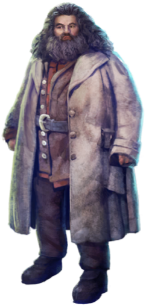
Hagrid's Hut
This small, wooden cabin nestled into the edge of the Forbidden Forest is the long time home of Rubeus Hagrid, the gamekeeper and Professor of Care of Magical Creatures at Hogwarts.
Return to: Hogwarts Grounds
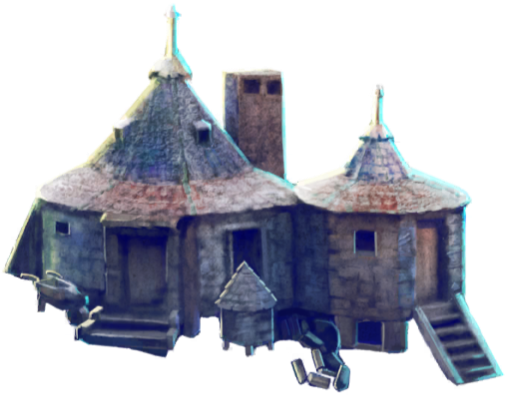
Baby Norwegian Ridgeback
Native to Norway, young Norwegian Ridgebacks develop the skill to breathe fire earlier than any other dragon breed. Hagrid illegally hatched a baby Norwegian Ridgeback, Norberta, who was eventually raised in a dragon sanctuary.
Return to: Romanian Dragon Sanctuary
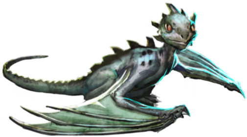
Buckbeak
Buckbeak was a Hippogriff saved by Harry Potter from an unfair execution. Buckbeak was instrumental in enabling Sirius Black to escape the Dementors and leave Hogwarts.
Return to: Rubeus Hagrid
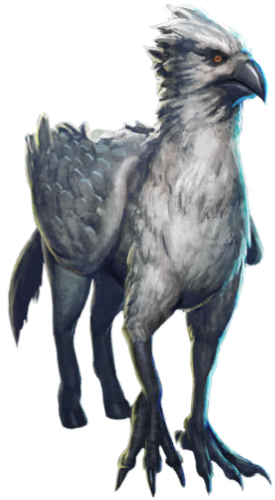
Abraxan Winged Horse
Abraxan is a breed of large, powerful winged horses with a palomino colouring. A team of Abraxan winged horses were used to transport a carriage filled with Beauxbatons students to Hogwarts for the Triwizard Tournament of 1994.
Return to: Beauxbatons Academy
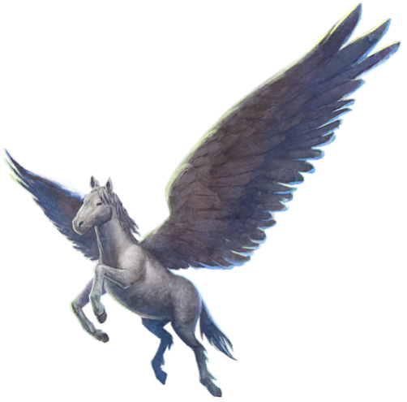
Page 2: Pumpkin Patch
Flobberworm
Large, toothless brown worms, Flobberworms have the Beast Classification of X, the lowest classification on record, known simply as “boring”.
Return to: Slug and Jiggers Apothecary
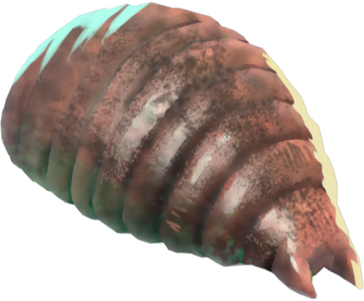
Baby Hippogriff
Hippogriffs build nests upon the ground for their young where they lay a single large, fragile egg which hatches within a remarkable 24 hours. Infant Hippogriffs can fly within a week of hatching.
Return to: Hogwarts Grounds
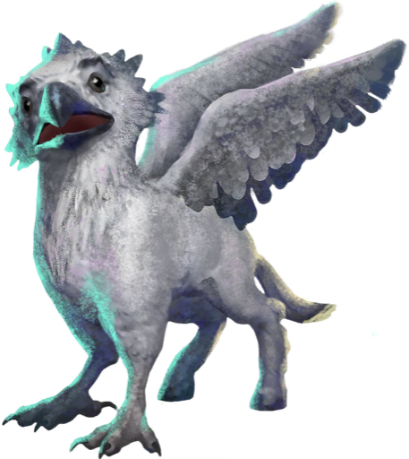
Monster Book of Monsters
The Monster Book of Monsters is an incredibly vicious fanged textbook used by Rubeus Hagrid when he taught Care of Magical Creatures. Opening the book requires that the user tame it by gently stroking its spine.
Return to: Flourish and Blotts
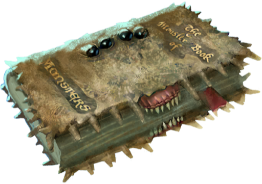
Kneazle
An excellent pet for any witch or wizard, Kneazles are magical felines with a high intelligence and the ability to detect suspicious people. They are often bred with normal housecats, as purebred Kneazles require a special license to own.
Return to: Magical Menagerie
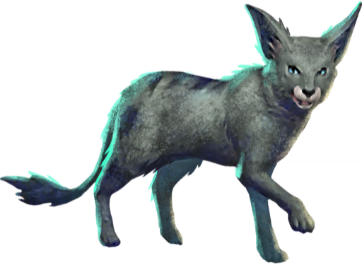
Acromantula Eggs
Acromantula Eggs are Class A Non-Tradeable Goods. Females can lay up to one hundred eggs at a time, and the eggs are roughly the size of beach balls.
Return to: Island of Borneo
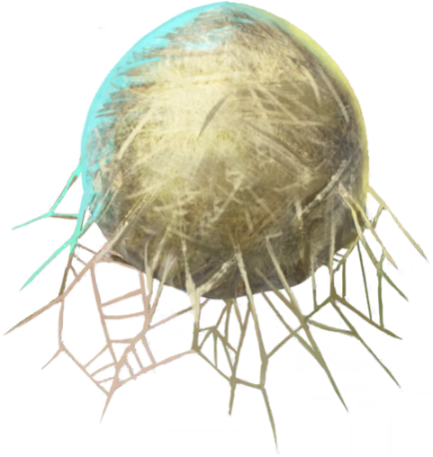
Page 3: Forbidden Forest
Baby Unicorn
Unicorn foals are initially gold in colour before turning silver and then white as they mature. Unicorns inhabit the forests of Europe and their horn, blood, and hair all have coveted magical properties.
Return to: Forbidden Forest
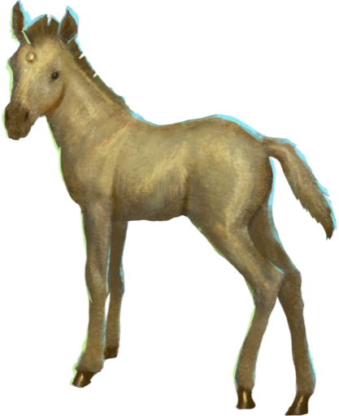
Firenze
Firenze is a Centaur who lives within the Forbidden Forest. He briefly broke with Centaur tradition and taught Divination at Hogwarts School of Witchcraft and Wizardry before eventually returning to his colony following the Battle of Hogwarts.
Return to: The Forbidden Forest
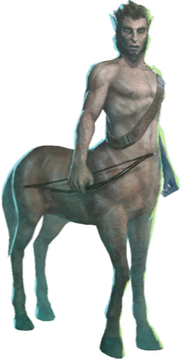
Dragon Egg
Dragon mothers are extremely protective of their eggs, breathing fire on them to keep them warm and incubate their young. Dragon Eggs are classified as Class A Non-Tradeable Material.
Return to: Romanian Dragon Sanctuary
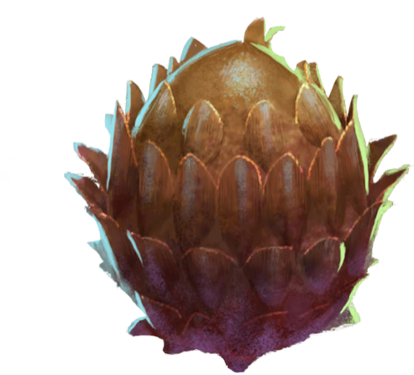
Blast-Ended Skrewt
Blast-Ended Skrewts, controversially bred by Rubeus Hagrid, are a cross between Manticores and Fire Crabs. Aggressive and ill-tempered, male Blast-Ended Skrewts have stingers, while the females have suckers in order to suck blood.
Return to: Hogwarts Grounds
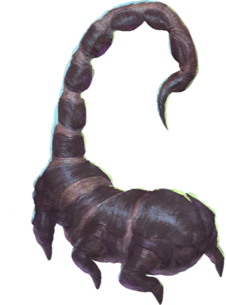
Puffskein
A popular pet for wizarding children, a Puffskein is a docile magical creature covered in fur. They are easy to care for, and have no objection to being cuddled or thrown about.
Return to: Magical Menagerie
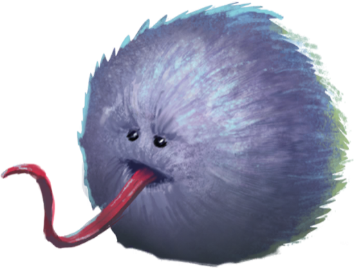
Hippogriff
A Hippogriff is a flying magical creature with the head, talons, and wings of an eagle, and body, tail, and rear end of a horse. Hippogriffs are native to Europe and can make noble companions if shown the right level of respect.
Return to: Hogwarts Grounds
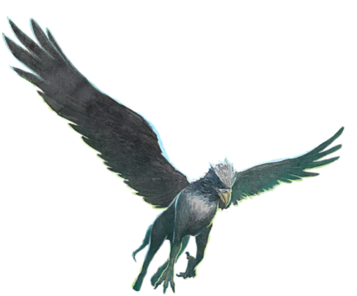